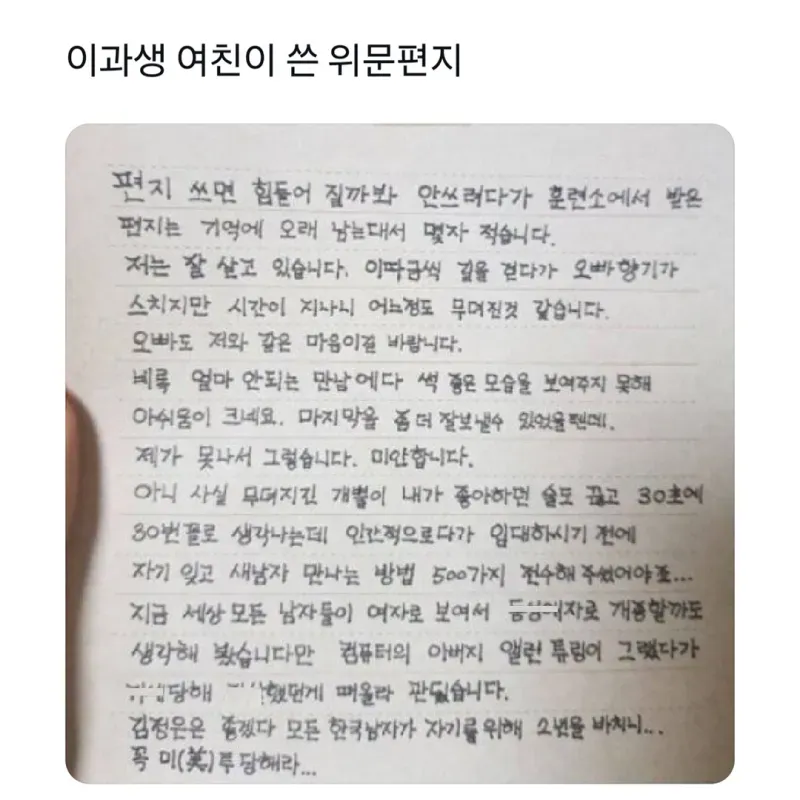
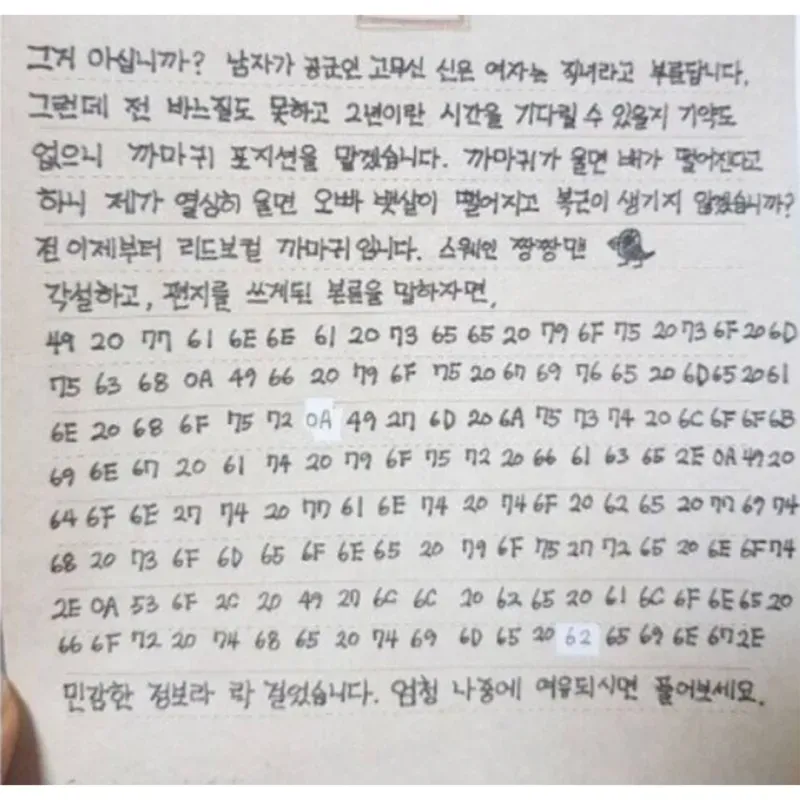
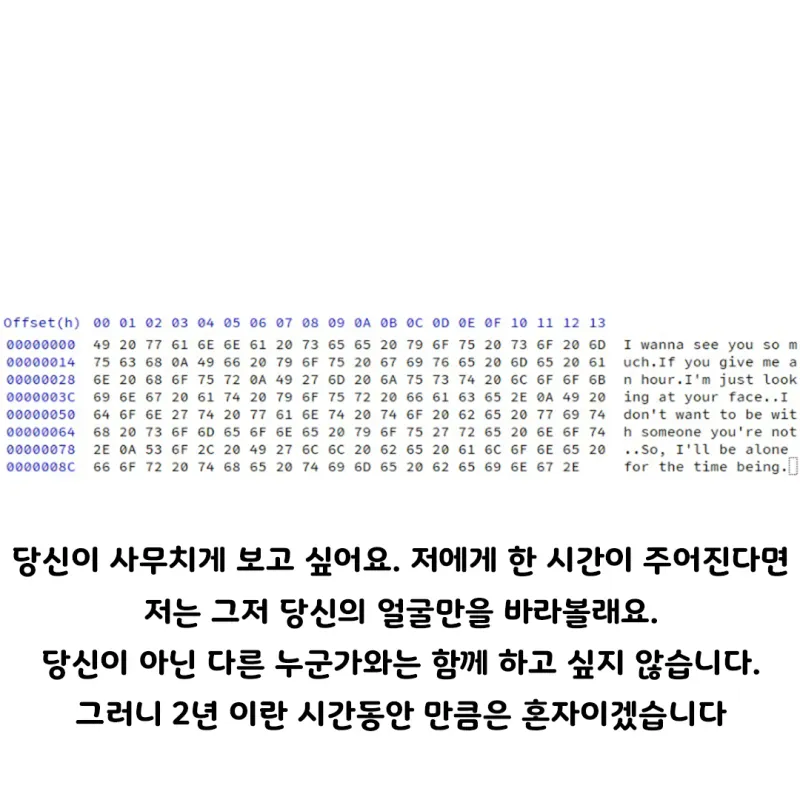

전에 이거쓴 개붕이가 깨졌다고 그만올려달라더라 ㅋㅋ
휴 잘 자겠다
남친부럽
진짜 저런 정성인 여친 만나는것도 ㅈㄴ 큰복인거같어 ㅈㄴ 부럽다
큰복이네 놓치지마라
크,,,
완성형 한글로 썼어야지
https://www.dogdrip.net/185328682
원글
https://www.dogdrip.net/226216483
헤어지고 올리지 말아달란 글
https://www.dogdrip.net/393831598
댓글 1페이지에 본인등판 글
이이상은 찾기 귀찮다!
ㅋㅋㅋㅋ